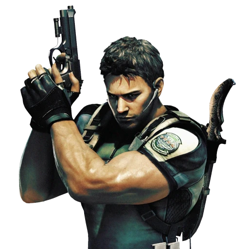
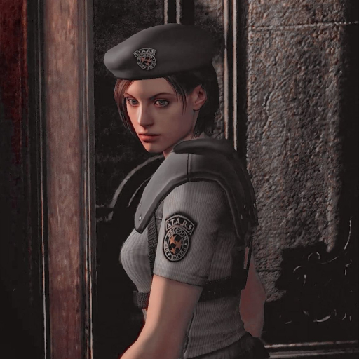
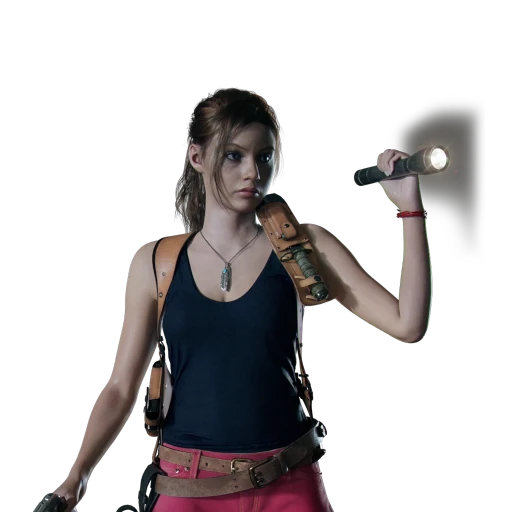

Resident Evil, conocido como Biohazard (バイオハザード) en Japón, es una serie de videojuegos de terror y una franquicia de medios japonesa creada por Capcom. Consiste en videojuegos de terror y supervivencia, disparos en tercera persona y disparos en primera persona, en los que los jugadores suelen sobrevivir en entornos habitados por zombis y otras criaturas mutadas. La franquicia se ha expandido a otros medios, incluida una serie de películas de acción real, películas animadas, series de televisión, cómics, novelas, audiolibros y productos. Resident Evil es la franquicia de terror más taquillera.
El primer juego de Resident Evil fue creado por Shinji Mikami y Tokuro Fujiwara para PlayStation y lanzado en 1996. Se le atribuye haber definido el género de terror de supervivencia y haber devuelto a los zombis a la cultura popular. Con Resident Evil 4 (2005), la franquicia pasó a una acción de disparos más dinámica, popularizando la vista en tercera persona «por encima del hombro» en los juegos de acción y aventuras. El 27 de enero de 2026, Capcom anunció que la franquicia había vendido más de 183 millones de copias en total.
La historia da comienzo en las Montañas Arklay, a las afueras de la localidad ficticia de Raccoon City, cuando una oleada de extraños asesinatos empieza a ocurrir cerca de la ciudad. Algunos excursionistas son encontrados muertos en puntos cercanos, parcialmente devorados, aunque no se sabe quién o qué ha sido el causante de dichas atrocidades. Para evitar que el pánico cunda por la ciudad, el departamento de policía decide enviar a los S.T.A.R.S., la unidad de operaciones especiales de Raccoon City cuyos miembros están especialmente entrenados en la labor de tácticas de rescate y supervivencia, para investigar a fondo el caso. Es así como el equipo Bravo es enviado a investigar los sucesos extraños en las montañas Arklay. Entonces, se pierde el contacto con este equipo y es cuando un segundo equipo (el equipo Alpha) comandado por Albert Wesker le asignan la misión de continuar la investigación, así como encontrar el paradero del equipo Bravo.
La mayoría de las entregas comienzan durante o después de la gran oleada destructiva inicial. En esta situación los protagonistas, generalmente Chris Redfield, Jill Valentine, Leon S. Kennedy, Claire Redfield, Ethan Winters (y algunos más), deben sobrevivir y buscar la forma de escapar mientras se enfrentan a los zombis y monstruos no solo nacidos del contacto con los muertos, sino también de otros que se han fugado de los laboratorios de desarrollo de las armas biológicas de Umbrella Corporation creados a propósito (como los llamados Tyrant) y un sinfín de armas biológicas que los protagonistas deberán superar para lograr escapar. El contexto bajo el que se desarrolla la historia solo se vislumbra a medida que avanza el juego; los diferentes personajes y lugares que visita el jugador proporcionan pistas respecto a lo que sucedió a la gente y lo que debe hacer.
Chris, Jill y Wesker pertenecieron a los S.T.A.R.S., una división élite de las fuerzas policiales la cual se moviliza ante amenazas a la ciudadanía. Mientras que Umbrella, envía mercenarios para asesinar a los sobrevivientes que quedan de los incidentes, tal es el caso de Hunk, el Sargento Nicholai, Krauser y Ada (los últimos dos enviados por Wesker) dentro de otros tantos. El presidente envía un equipo aparte para rescatar a los sobrevivientes, los cuales terminan enfrentándose contra los mercenarios mencionados.

Protagonista del primer Resident Evil, Resident Evil Code Veronica, Resident Evil: The Umbrella Chronicles, parte del Resident Evil: Revelations, Resident Evil 5, Resident Evil 6, también es uno de los protagonistas principales en Resident Evil: The Darkside Chronicles, Resident Evil 7 y Resident Evil 8, y aparece en la película Resident Evil: Vendetta. Chris Redfield comenzó su carrera militar en las Fuerzas Aéreas de Estados Unidos luego se unió a los S.T.A.R.S. ahora es exmiembro de dicha unidad, actualmente fundador y miembro de la BSAA. Su mayor enemigo fue Albert Wesker. Poseedor de una hoja de servicios repleta de elogios y de medidas disciplinarias por igual, sus superiores describen a Chris como «intransigente», «dotado de una dedicación inquebrantable» y poseedor de «un alto nivel de adaptación».

Protagonista del primer Resident Evil, Resident Evil 3, Resident Evil: The Umbrella Chronicles, parte del Resident Evil 5 junto con Chris y en Resident Evil: Revelations. Pertenecía a la misma unidad S.T.A.R.S. y subdivisión que él. Actualmente trabaja para la BSAA.
Protagonista del Resident Evil 2, Resident Evil 4, Resident Evil: Darkside Chronicles, Resident Evil 6 y Resident Evil: Requiem. También aparece en la película Resident Evil Degeneration, Resident Evil: Damnation y Resident Evil: Vendetta. Exmiembro del Departamento de policía de Raccoon; tras vivir los sucesos de la catástrofe de esta ciudad, Actualmente trabaja para el Gobierno de los Estados Unidos, entabla una enemistad con Umbrella y la persigue como objetivo personal. Su mayor enemigo es Jack Krauser, sin embargo, muere en Resident Evil 4 cuando Leon lo vence (cabe destacar que no fue Leon sino que, en realidad, fue Ada quien mata a Krauser, esto se entiende con el minijuego de Resident Evil 4, Separate Ways).

Protagonista del segundo videojuego de la saga principal, junto con Leon, Resident Evil Code: Verónica, Resident Evil: The Darkside Chronicles, y Resident Evil: Revelations 2, también aparece en la película Resident Evil Degeneration y en el manga Resident Evil: Heavenly Island. Ex estudiante, es hermana de Chris y estuvo en Raccoon City tratando de encontrarlo. Es una sobreviviente al igual que Leon y mutuamente sobreviven. Tres meses después, viaja a Europa para reencontrarse con su hermano sin éxito: La captura un equipo de Umbrella y la llevan a la isla Rockford, allí consigue escapar y reunirse con Chris luego se une a una organización no gubernamental llamada TerraSave.
La jugabilidad de los videojuegos es diferente en cada título, cada videojuego tiene al menos un pequeño cambio en cuanto a jugabilidad.
Los primeros juegos tenían un ángulo de cámara con planos fijos en 3D que ayudaban a causar miedo e incertidumbre, salvo en los tiempos de carga que había entre habitaciones en los que el juego simulaba una vista en primera persona. Ejemplos claros de esto son los 3 primeros juegos (RE1, RE2, y RE3), Code Veronica, la saga Outbreak (1 y 2) y el Resident Evil Zero. Esto fue cambiando conforme al tiempo.
La nueva era da la bienvenida a la tercera persona, y así también al Survival Action. Desde la llegada de Resident Evil 4 (2005) se conserva mayoritariamente la tercera persona y se cambia a una vista sobre el hombro, al mismo tiempo que se despide al género survival horror y se acerca más a la acción. Con la llegada de Resident Evil 5 (2009) esto se acentuó más, dando aún más importancia a la acción que el terror. Sin embargo con la llegada del título Resident Evil: Revelations (2012) y Resident Evil: Revelations 2 (2015) esto cambió, dando más importancia al terror, con una jugabilidad más pausada, pudiéndose apuntar y caminar al mismo tiempo (jugabilidad antes vista en Resident Evil Outbreak file #2 y Resident Evil Dead Aim) esta es mejorada gracias a la cámara en tercera persona que maneja el juego, mezclando el manejo del personaje al estilo Resident Evil 4 con el de Resident Evil 5. Resident Evil 6 (2012) llegó mezclando muchos de los elementos de la nueva era, mejorado el sistema de coberturas, mejorando el sistema de peleas cuerpo a cuerpo, y también incorporando la opción de apuntar y caminar al mismo tiempo, con 4 campañas, una centrada en el terror, otras 2 en la acción pura y otra en el sigilo.
A lo largo de la saga de videojuegos, Capcom ha experimentado con otros tipos de jugabilidad aparte de los antes mencionados. Uno de los ejemplos más conocidos es la primera persona, más específicamente el subgénero llamado First Person Shooter (o FPS).
Dentro de los juegos en perspectiva de primera persona, podemos tomar como ejemplo a los tres juegos de la sub saga Survivor (Survivor, Survivor 2: Code Veronica y Dead Aim), los dos juegos de la sub saga Chronicles (Umbrella Chronicles, Darkside Chronicles) y a Resident Evil 7 y Resident Evil Village, pertenecientes a la saga principal. Aunque cambian a perspectiva a primera persona; vuelve algunas cosas del pasado, como el guardar objetos en baúles y los casetes como los sustitutos de la máquinas de escribir.